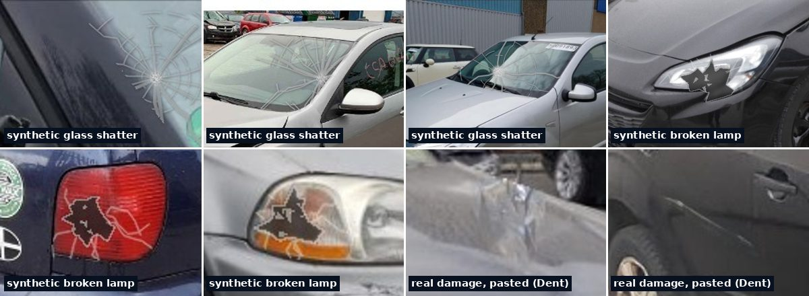

ÖzetSummaryZusammenfassung
Dürüst not: Diğer modeller bu fotoğrafları hiç görmeden (zero-shot) ölçüldü. Bizim 2.x karar katmanı ise aynı 1000 fotoğrafın farklı katlarında eğitilip test edildi (5×5 çapraz doğrulama) — yani avantajlı bir karşılaştırma. Dedektörlerin kendisi (aynı açık modeller) değişmedi. Honest note: the other models were measured zero-shot on these photos. Our 2.x decision layer was trained and tested on different folds of the same 1,000 photos (5×5 cross-validation) — so this comparison favours us. The detectors themselves (the same open models) did not change.Ehrliche Anmerkung: Die anderen Modelle wurden zero-shot an diesen Fotos gemessen. Unsere 2.x Entscheidungsstufe wurde an verschiedenen Teilmengen derselben 1.000 Fotos trainiert und getestet (5×5 Kreuzvalidierung) — daher begünstigt dieser Vergleich uns. Die Detektoren selbst (die gleichen offenen Modelle) haben sich nicht verändert.
1) Aynı 1000 fotoğraf (test1000)1) The same 1,000 photos (test1000)1) Die gleichen 1.000 Fotos (test1000)
VehiDE + sağlam araç fotoğrafları. Yakalama = hasarlı fotoğrafta hasar bulma; yanlış alarm = sağlam araçta hasar demek.VehiDE + intact-car photos. Recall = damage found on a damaged photo; false alarm = “damage” on an intact car.VehiDE + Fotos von unbeschädigten Autos. Trefferquote = Schaden auf einem beschädigten Foto gefunden; Fehlalarm = „Schaden“ an einem unbeschädigten Auto.
Naiscorp Mask R-CNN yalnız 100 fotoğraflık alt kümede çalıştırılabildi (4.4 sn/foto): F1 0.64 · yakalama %83 · yanlış alarm %12 (aynı alt kümede v1.0: 0.53, shanexf: 0.53). Ayrıntılar: benchmark-1000. Naiscorp Mask R-CNN could only be run on a 100-photo subset (4.4 s/photo): F1 0.64 · recall 83% · false alarm 12% (same subset: v1.0 0.53, shanexf 0.53). Details: benchmark-1000.Naiscorp Mask R-CNN konnte nur auf einem 100-Fotos-Subset (4,4 s/Foto) ausgeführt werden: F1 0,64 · Trefferquote 83% · Fehlalarm 12% (selbes Subset: v1.0 0,53, shanexf 0,53). Details: benchmark-1000.
2) CarDD resmi test seti (374 görüntü) — kutu AP2) CarDD official test split (374 images) — box AP2) CarDD offizieller Test-Split (374 Bilder) — Box AP
2.3 yalnız karar katmanını değiştirdi; kutuları çizen dedektörler 2.1 ile aynı, bu yüzden CarDD kutu AP'si değişmez.2.3 only changes the decision layer; the box detectors are the same as 2.1, so CarDD box AP is unchanged.2.3 ändert nur die Entscheidungs-Schicht; die Box-Detektoren sind dieselben wie bei 2.1, daher bleibt der CarDD Box AP unverändert.
3) Hasar AI 2.3: 1000 yeni fotoğraf ve yeni “kırık parça” başlığı3) Hasar AI 2.3: 1,000 new photos and a new “broken part” head3) Hasar AI 2.3: 1.000 neue Fotos und ein neuer „defektes Teil“-Kopf
814 gerçek hasar fotoğrafı (DrBimmer, MIT) + 186 sentetik (62 cam kırığı, 62 kırık far/stop, 62 gerçek hasar yamasının başka araca aktarımı). Fotoğrafların %20'si (167) test için hiç kullanılmadan ayrıldı; sentetik yamalar yalnız eğitim kısmından alındı. 814 real damage photos (DrBimmer, MIT) + 186 synthetic (62 shattered glass, 62 broken head/tail lights, 62 real damage patches transferred to other cars). 20% of the photos (167) were held out and never used for training; synthetic patches come from the training part only.814 echte Schadensfotos (DrBimmer, MIT) + 186 synthetische (62 zertrümmerte Scheiben, 62 beschädigte Scheinwerfer/Rückleuchten, 62 echte Schadenspatches auf andere Autos übertragen). 20% der Fotos (167) wurden zurückgehalten und nie für das Training verwendet; synthetische Patches stammen nur aus dem Trainingsanteil.

| DrBimmer test (167 foto)DrBimmer held-out (167 photos)DrBimmer zurückgehalten (167 Fotos) | YakalamaRecallTrefferquote | AUROC göçükdentDelle | AUROC çizikscratchKratzer | AUROC kırık parçabroken partbeschädigtes Teil | F1 kırık parçabroken partbeschädigtes Teil |
|---|---|---|---|---|---|
| 2.1 (yayındaki ağırlıklar) · careful2.1 (shipped weights) · careful2.1 (versandte Gewichte) · sorgfältig | 59% | 0.68 | 0.56 | 0.56 | 0.09 |
| ⭐ 2.3 · careful⭐ 2.3 · careful⭐ 2.3 · sorgfältig | 59% | 0.67 | 0.59 | 0.79 | 0.51 |
| 2.1 · fast2.1 · fast2.1 · schnell | 56% | 0.65 | 0.56 | 0.56 | 0.09 |
| 2.3 · fast2.3 · fast2.3 · schnell | 56% | 0.67 | 0.60 | 0.77 | 0.54 |
| araştırma: kapı da yeni veriyle eğitildi (yayınlanmadı)research: gate also retrained on new data (not shipped)Forschung: Tor auch an neuen Daten neu trainiert (nicht versandt) | 69% | 0.68 | 0.61 | 0.79 | 0.79 |
Dürüst okuma. Bu fotoğrafların çoğu ağır kaza: %92'inde kırık/eksik parça, %77'inde göçük var. Böyle bir sette F1 yanıltıcıdır: “hasar varsa hep kırık parça de” kuralı bile F1 0.71 alır. Bu yüzden eşikten bağımsız AUROC'a bakıyoruz: kırık parça 2.1'deki 0.56'dan (kırık lamba skoru, vekil) 0.79'a çıktı (fark %95 GA: +0.10 … +0.35, anlamlı). Göçük / çizik farkı anlamlı değil. Kırık parça eşiği bilerek yüksek (0,50): kesinlik ~%97, yakalama ~%38 (DrBimmer'da) — gerçek dünya VehiDE fotoğraflarında kesinlik yalnız ~%47 (aşağıdaki 2.3.1 denetimine bakın). Yakalama değişmedi, çünkü 1000 fotoğraflık testte yanlış alarmı artırmamak için hasar kapısını 2.1'deki gibi bıraktık. Kapıyı da yeni veriyle eğitmek (son satır) yeni fotoğraflarda yakalamayı %59 → %69 yapıyor ama eski testte F1'i 0.63 → 0.60 düşürüp yanlış alarmı %21'e çıkarıyor. Asıl çözüm: dedektörü bu tür fotoğraflarla GPU'da yeniden eğitmek (defter hazır). 9 tarif denendi; seçim kuralı (eski testte bozulma olmaması) önceden belirlendi. Honest reading. Most of these photos are heavy crashes: 92% contain a broken/missing part and 77% a dent. On such a set F1 is misleading: even the rule “always say broken part when damage is found” scores F1 0.71. So we use threshold-free AUROC: broken part went from 0.56 in 2.1 (broken-lamp score as proxy) to 0.79 (difference 95% CI: +0.10 … +0.35, significant). Dent / scratch changes are not significant. The broken-part threshold is deliberately high (0.50): precision ~97%, recall ~38% on DrBimmer — on real-world VehiDE photos precision is only ~47% (see the 2.3.1 audit below). Recall did not change because we kept the 2.1 damage gate so that false alarms on the 1,000-photo test do not rise. Retraining the gate on the new data too (last row) lifts recall on the new photos from 59% to 69% but drops old-test F1 from 0.63 to 0.60 and raises false alarms to 21%. The real fix: retrain the detector on such photos on a GPU (notebook ready). 9 recipes were tried; the selection rule (no regression on the old test) was fixed beforehand.Ehrliche Bewertung. Die meisten dieser Fotos zeigen schwere Unfälle: 92% enthalten ein beschädigtes/fehlendes Teil und 77% eine Delle. An einem solchen Satz ist F1 irreführend: selbst die Regel „immer beschädigtes Teil sagen, wenn ein Schaden gefunden wird“ erzielt einen F1 von 0.71. Daher verwenden wir den schwellwertfreien AUROC: beschädigtes Teil verbesserte sich von 0.56 in 2.1 (Lampen-Schadens-Score als Proxy) auf 0.79 (Unterschied 95% CI: +0.10 … +0.35, signifikant). Änderungen bei Delle / Kratzer sind nicht signifikant. Der Schwellwert für beschädigte Teile ist absichtlich hoch (0.50): Präzision ~97%, Trefferquote ~38% bei DrBimmer — bei realen VehiDE-Fotos liegt die Präzision nur bei ~47% (siehe die 2.3.1-Audit unten). Die Trefferquote änderte sich nicht, weil wir das 2.1-Schadens-Tor beibehielten, damit die Fehlalarme bei den 1.000 Testfotos nicht steigen. Das Neu-Trainieren des Tors an den neuen Daten (letzte Zeile) erhöht die Trefferquote bei den neuen Fotos von 59% auf 69%, senkt aber den alten Test-F1 von 0.63 auf 0.60 und erhöht die Fehlalarme auf 21%. Die echte Lösung: den Detektor an solchen Fotos auf einer GPU neu trainieren (Notebook bereit). 9 Rezepte wurden ausprobiert; die Auswahlregel (keine Regression beim alten Test) wurde im Voraus festgelegt.
1000 fotoğraflık eski test (çapraz doğrulama), careful: 2.3 F1 0.63 / yakalama 84% / yanlış alarm 15% · 2.1: 0.63 / 84% / 15%. Fast: 2.3 0.62 · 2.1 0.62. Old 1,000-photo test (cross-validated), careful: 2.3 F1 0.63 / recall 84% / false alarm 15% · 2.1: 0.63 / 84% / 15%. Fast: 2.3 0.62 · 2.1 0.62.Alter 1.000-Foto-Test (kreuzvalidiert), sorgfältig: 2.3 F1 0.63 / Trefferquote 84% / Fehlalarm 15% · 2.1: 0.63 / 84% / 15%. Schnell: 2.3 0.62 · 2.1 0.62.
4) Denetim — Hasar AI 2.3.1 (23.10.2026)4) Audit — Hasar AI 2.3.1 (23 Oct 2026)4) Audit — Hasar AI 2.3.1 (23 Okt 2026)
Önceki görevi yeniden kontrol ettik (kullanılan 30 beceri). Üç sorun bulundu ve düzeltildi; ağırlıklar değişmedi (2.3.0 ile aynı kararlar, JS ↔ Python 2336 fotoğrafta 0 fark).We re-checked the previous task (30 skills used). Three problems were found and fixed; the weights did not change (same decisions as 2.3.0, JS ↔ Python 0 differences on 2,336 photos).Wir haben die vorherige Aufgabe (30 Fähigkeiten verwendet) erneut überprüft. Drei Probleme wurden gefunden und behoben; die Gewichte änderten sich nicht (gleiche Entscheidungen wie 2.3.0, JS ↔ Python 0 Unterschiede bei 2.336 Fotos).
a) “Kırık / eksik parça” gerçek fotoğraflarda zayıfa) “Broken / missing part” is weak on real-world photosa) „Beschädigtes / fehlendes Teil“ ist bei realen Fotos schwach
168 VehiDE fotoğrafını (test1000'den rastgele 120 + sitedeki 48 galeri fotoğrafı) elle etiketledik: cam dışı bir parça yırtık, delik, kopuk, kırık far/stop/sis veya ayna ise “kırık parça”. Sonuç: DrBimmer'daki ~%97 kesinlik taşınmıyor.We hand-labelled 168 VehiDE photos (120 random from test1000 + the 48 site-gallery photos): “broken part” = a non-glass part that is torn, holed, detached, or a broken head/tail/fog lamp or mirror. Result: the ~97% precision seen on DrBimmer does not transfer.Wir haben 168 VehiDE-Fotos manuell beschriftet (120 zufällig aus test1000 + die 48 Galerie-Fotos der Website): „beschädigtes Teil“ = ein nicht aus Glas bestehendes Teil, das zerrissen, gelocht, abgetrennt ist, oder eine beschädigte Scheinwerfer/Rückleuchte/Nebelleuchte oder ein Spiegel. Ergebnis: die bei DrBimmer beobachtete Präzision von ~97% lässt sich nicht übertragen.
| SetSetSet | n | gerçektruewahr | işaretlenenflaggedmarkiert | Kesinlik [%95 Wilson]Precision [95% Wilson]Präzision [95% Wilson] | YakalamaRecallTrefferquote |
|---|---|---|---|---|---|
| fast · ayar seti (120, VehiDE)fast · tune set (120, VehiDE)schnell · Einstellungsmenge (120, VehiDE) | 120 | 43 | 51 | 53% [40%–66%] | 63% |
| fast · galeri (48, VehiDE)fast · gallery (48, VehiDE)schnell · Galerie (48, VehiDE) | 48 | 11 | 17 | 47% [26%–69%] | 73% |
| careful · ayar seti (120)careful · tune set (120)vorsichtig · Einstellungsmenge (120) | 120 | 43 | 52 | 48% [35%–61%] | 58% |
| careful · galeri (48)careful · gallery (48)vorsichtig · Galerie (48) | 48 | 11 | 16 | 38% [18%–61%] | 55% |
AUROC (fast): ayar seti 0.66, galeri 0.71 — DrBimmer'da 0,77–0,79. Eşik değiştirmek, cam kuralı veya 120 etiketle başlığı yeniden eğitmek galeri setinde anlamlı iyileşme getirmedi (yeniden eğitilen başlığın AUROC'u ~0,5): 34 özellik bu sinyali taşımıyor; gerçek çözüm dedektörü “kırık parça” sınıfıyla GPU'da yeniden eğitmek. Düzeltme: etiket artık “olası” olarak gösteriliyor ve maliyette kesin satır değil, “parça değişimi gerekirse” koşullu ek olarak (toplama dahil değil).AUROC (fast): tune set 0.66, gallery 0.71 — vs 0.77–0.79 on DrBimmer. Changing the threshold, a glass rule, or retraining the head with the 120 labels gave no significant gain on the gallery (retrained head AUROC ~0.5): the 34 features do not carry this signal; the real fix is retraining the detector with a “broken part” class on a GPU. Fix: the label is now shown as “possible”, and in the cost box it is a conditional “if a part must be replaced” extra, not in the total.AUROC (schnell): Einstellungsmenge 0.66, Galerie 0.71 — vs 0.77–0.79 auf DrBimmer. Die Änderung des Schwellenwerts, eine Glasregel oder das erneute Trainieren des Kopfes mit den 120 Beschriftungen brachte keinen signifikanten Gewinn in der Galerie (erneut trainierter Kopf AUROC ~0.5): die 34 Merkmale tragen dieses Signal nicht; die echte Lösung ist das erneute Trainieren des Detektors mit einer „beschädigtes Teil“-Klasse auf einer GPU. Behebung: Die Beschriftung wird nun als „möglich“ angezeigt, und im Kostenfeld ist es ein bedingtes „wenn ein Teil ersetzt werden muss“ Extra, nicht in der Gesamtkosten.
b) Sentetik fotoğrafların katkısı ≈ 0 (ablasyon)b) The synthetic photos contribute ≈ 0 (ablation)b) Die synthetischen Fotos tragen etwa 0 (Ablation) bei.
| Eğitim verisi → DrBimmer test AUROC (careful)Training data → DrBimmer held-out AUROC (careful)Trainingsdaten → DrBimmer AUROC (vorsichtig) für zurückgehaltene Daten | göçükdentDelle | çizikscratchKratzer | kırık parçabroken partbeschädigtes Teil |
|---|---|---|---|
| full (DrB + all synthetic) | 0.669 | 0.589 | 0.790 |
| no synthetic | 0.670 | 0.589 | 0.787 |
| no glass synth | 0.669 | 0.589 | 0.790 |
| no lamp synth | 0.669 | 0.589 | 0.786 |
| no paste synth | 0.670 | 0.589 | 0.788 |
| synthetic only (no DrB) | 0.678 | 0.563 | – ‡ |
1000 fotoğraflık testte F1: sentetikle 0,631 · sentetiksiz 0,628 · yeni veri olmadan 0,626 (gürültü içinde). Neden: dedektörler donmuş; sentetik pikseller yalnız dedektör yeniden eğitilirse işe yarar. 2.3'teki kazancın tamamı gerçek DrBimmer fotoğraflarından geliyor. ‡ yalnız sentetik veride “kırık parça yok” örneği olmadığı için o başlık eğitilemez.F1 on the 1,000-photo test: with synthetic 0.631 · without 0.628 · without any new data 0.626 (within noise). Why: the detectors are frozen; synthetic pixels only help when the detector itself is retrained. All of the 2.3 gain comes from the real DrBimmer photos. ‡ synthetic photos alone have no “no broken part” examples, so that head cannot be trained.F1 auf dem 1.000-Fotos-Test: mit synthetischen 0.631 · ohne 0.628 · ohne neue Daten 0.626 (innerhalb des Rauschens). Warum: Die Detektoren sind eingefroren; synthetische Pixel helfen nur, wenn der Detektor selbst erneut trainiert wird. Die gesamte 2.3 Steigerung kommt von den echten DrBimmer-Fotos. ‡ synthetische Fotos allein haben keine „kein beschädigtes Teil“-Beispiele, sodass dieser Kopf nicht trainiert werden kann.
c) Türkiye maliyeti: piyasa teklifleriyle geriye dönük testc) Türkiye cost: backtest against market quotesc) Türkei-Kosten: Rücktest gegen Marktangebote
| DurumCaseFall | Bizim (KDV dahil)Ours (incl. VAT)Unsere (inkl. MwSt.) | armut.com teklifleriarmut.com quotesarmut.com-Angebote | aralığımızın örtüşmesioverlap of our rangeÜberschneidung unseres Bereichs |
|---|---|---|---|
| bumper paint (tampon boyama) | ₺2,500 – ₺14,738 | ₺2,500 – ₺10,000 | 61% |
| plastic bumper repair (tampon tamiri) | ₺4,000 – ₺25,764 | ₺4,000 – ₺8,000 | 18% |
| local paint, small scratch (lokal boya) | ₺2,700 – ₺5,400 | ₺2,000 – ₺10,000 | 100% |
| plastic bumper dent repair + paint (tampon tamiri) | ₺4,000 – ₺25,764 | ₺4,000 – ₺8,000 | 18% |
| local paint, small fender scratch | ₺1,800 – ₺3,600 | ₺2,000 – ₺10,000 | 89% |
Önce tampon işleri piyasanın 1,7–3,1 katıydı (plastik tamirde örtüşme %0), çünkü alt sınır ATO azami tarifesinden türetiliyordu. Maliyet modeli 1.1: alt sınır = bağımsız servis teklifi tabanı, üst sınır = ATO azami (yetkili servis). Ayrıca: parça fotoğrafta bulunamazsa “*varsayıldı” işareti; API artık sitedeki ülke bazlı modelin aynısını döndürüyor (cost_estimate, country=TR/DE/GB/US, API 1.6.2).Before, bumper jobs were 1.7–3.1× the market (0% overlap for plastic repair) because the low end was derived from the ATO maximum tariff. Cost model 1.1: low end = independent-shop quote floor, high end = ATO maximum (dealer). Also: a “*assumed” mark when the part is not found in the photo; the API now returns the same per-country model as the site (cost_estimate, country=TR/DE/GB/US, API 1.6.2).Früher waren Stoßstangenarbeiten 1.7–3.1× teurer als der Markt (0% Überschneidung bei Kunststoffreparaturen), weil das untere Ende vom maximalen ATO-Tarif abgeleitet wurde. Kostenmodell 1.1: unteres Ende = unabhängige-Werkstatt-Angebotsboden, oberes Ende = ATO-Maximum (Händler). Auch: ein „*angenommen“ Hinweis, wenn das Teil nicht auf dem Foto gefunden wird; die API gibt nun dasselbe pro-Land-Modell wie die Website zurück (cost_estimate, country=TR/DE/GB/US, API 1.6.2).
Projeler, makaleler ve veri setleri (linkler)Projects, papers and datasets (links)Projekte, Arbeiten und Datensätze (Links)
YOLO11m, 6 hasar türü; CarDD + sağlam araç negatifleri. Bizim hasar modelimizin (int8 ONNX) tabanı.YOLO11m, 6 damage types; CarDD + intact-car negatives. Base of our damage model (int8 ONNX).YOLO11m, 6 Schadensarten; CarDD + intakte-Auto-Negative. Grundlage unseres Schadensmodells (int8 ONNX).
⚖️ AGPL-3.0 (Ultralytics) + CarDD şartları
YOLO11n, 14 parça-hasar sınıfı; parça modelimizin tabanı.YOLO11n, 14 part-damage classes; base of our parts model.YOLO11n, 14 Teilschadensklassen; Grundlage unseres Teilemodells.
⚖️ Apache-2.0 kart / AGPL-3.0 Ultralytics
YOLOv8s-seg, CarDD; Çekicin v1.0 bununla başladı.YOLOv8s-seg on CarDD; Çekicin v1.0 started from it.YOLOv8s-seg auf CarDD; Çekicin v1.0 begann damit.
⚖️ CarDD: ticari olmayan
Mask R-CNN R101 (764 MB), Vietnam sigorta fotoğrafları. 100 fotoğraflık alt kümede F1 0.64 (bizim v1.0: 0.53) ama 4.4 sn/foto ve sunucu gerekir.Mask R-CNN R101 (764 MB), Vietnamese insurance photos. F1 0.64 on a 100-photo subset (our v1.0: 0.53) but 4.4 s/photo and needs a server.Mask R-CNN R101 (764 MB), vietnamesische Versicherungsfotos. F1 0.64 auf einer 100-Fotos-Untermenge (unser v1.0: 0.53), aber 4.4 s/Foto und benötigt einen Server.
⚖️ özel lisans
YOLO11n, 16 parça-hasar sınıfı (Roboflow).YOLO11n, 16 part-damage classes (Roboflow).YOLO11n, 16 Teilschadensklassen (Roboflow).
⚖️ AGPL-3.0
ViT-Base sınıflandırıcı: fotoğraf başına 1 etiket, “hasarsız” sınıfı yok → sağlam araçta %95 yanlış alarm.ViT-Base classifier: one label per photo, no “no damage” class → 95% false alarms on intact cars.ViT-Base-Klassifikator: ein Label pro Foto, keine „kein Schaden“-Klasse → 95% Fehlalarme bei intakten Autos.
⚖️ MIT
4.000 görüntü, 6 hasar türü; alanın standart test seti.4,000 images, 6 damage types; the field’s standard test set.4.000 Bilder, 6 Schadentypen; der Standard-Testdatensatz der Branche.
⚖️ ticari olmayan
Gerçek zamanlı DETR; bir sonraki dedektör adayı. Colab/GPU defterimiz hazır (CPU’da eğitilemez).Real-time DETR; our next detector candidate. Our Colab/GPU notebook is ready (cannot train on CPU).Echtzeit-DETR; unser nächster Detektor-Kandidat. Unser Colab/GPU-Notizbuch ist bereit (kann nicht auf CPU trainieren).
⚖️ Apache-2.0
Büyük görsel-dil modeli + ayrı segmentasyon; %87,3 doğruluk bildiriyor ama sunucu GPU’su gerekir, telefonda çalışmaz.Large vision-language model + dedicated segmentation; reports 87.3% accuracy but needs a server GPU, not on-device.Großes Vision-Language-Modell + dedizierte Segmentierung; berichtet 87,3% Genauigkeit, benötigt aber einen Server-GPU, nicht on-device.
⚖️ makale
814 gerçek hasar fotoğrafı (göçük, çizik, kırık/eksik parça…) + 998 parça fotoğrafı, poligon etiketli. 2.3’ü bununla eğittik.814 real damage photos (dent, scratch, broken/missing part…) + 998 part photos, polygon labels. We trained 2.3 with it.814 echte Schadenfotos (Delle, Kratzer, gebrochenes/fehlendes Teil…) + 998 Teilfotos, Polygon-Labels. Wir haben 2.3 damit trainiert.
⚖️ MIT
Bizim modeller:Our models:Unsere Modelle: cekicin-damage-yolo11m-neg-onnx ↗ · cekicin-damage-yolo11n-onnx ↗ · AI Lab Space ↗ · W&B ↗ · wiki